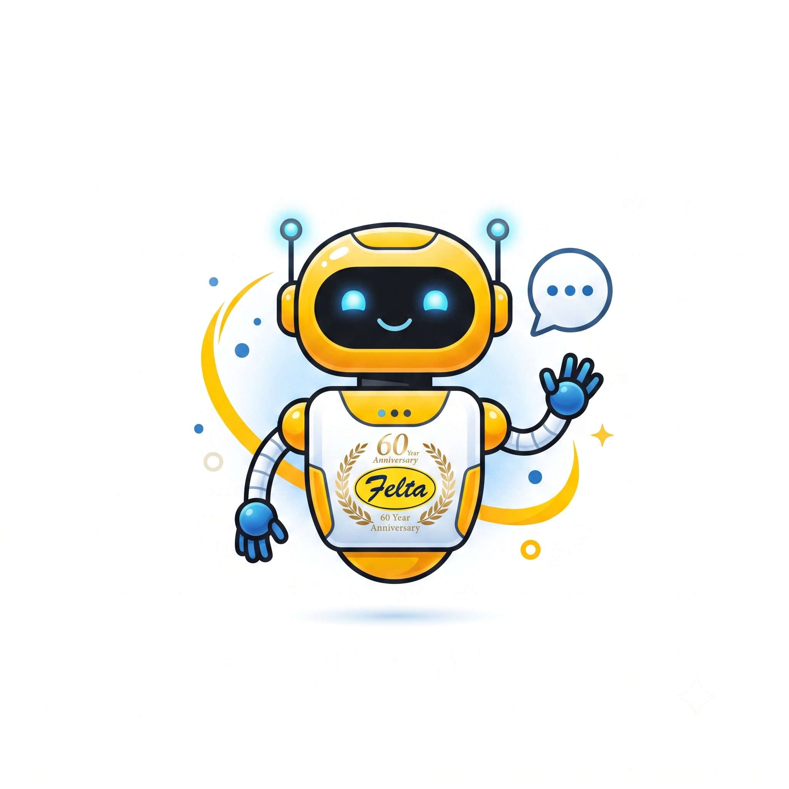

Ask Felix! ✨

Felix
Online — WRO Philippines AI
Hi! I'm
Felix
, your WRO Philippines database assistant. Ask me about competitions, teams, schools, payments, or anything in the database!
Felix Instantly 3.5 (Default)
Felix Overthinking 3.1 (Deep Reasoning)
Felix Billable Hours 2.5 (Production Tier)
Felix On A Budget 2.5 (Cost-Saver Mode)